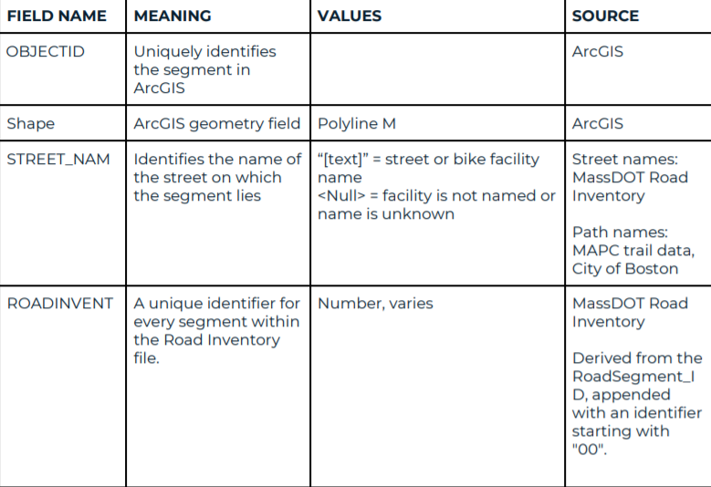
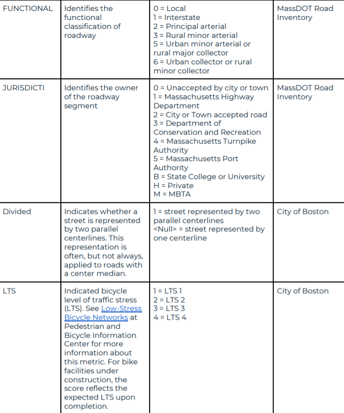
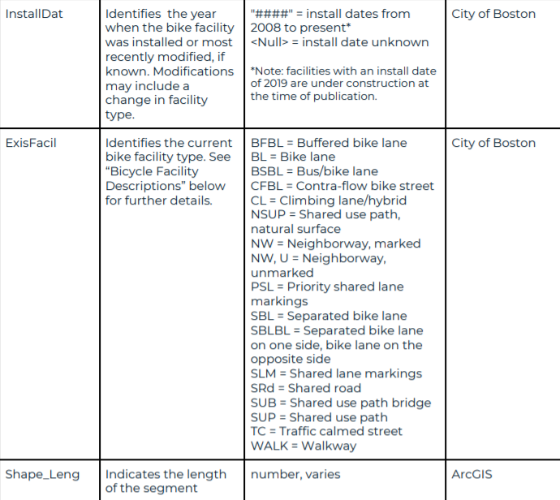
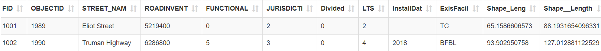
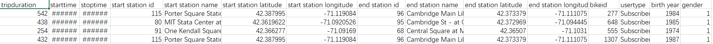
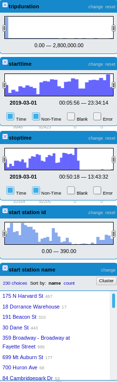
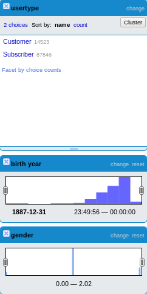
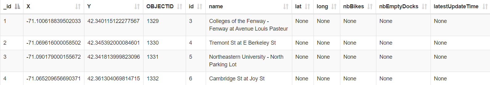
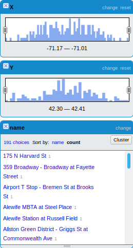

Dataset analysis and naming strategy
License analysis for selected datasets
The first 2 datasets have PPDL license. You are free:
• To Share: To copy, distribute and use the database.
• To Create: To produce works from the database.
• To Adapt: To modify, transform and build upon the database.
As long as you:
• Blank: This section is intentionally left blank. The PDDL imposes no restrictions on your use of the PDDL licensed database.
Source: https://opendatacommons.org/licenses/pddl/summary/
The license of the third dataset is more restrictive: Motivate hereby grants to you a non-exclusive, royalty-free, limited, perpetual license to access, reproduce, analyze, copy, modify, distribute in your product or service and use the Data for any lawful purpose (“License”).
Prohibited Conduct: Host, stream, publish, distribute, sublicense, or sell the Data as a stand-alone dataset; provided, however, you may include the Data as source material, as applicable, in analyses, reports, or studies published or distributed for non-commercial purposes.
However, as stated above, we are able to use the dataset as source material in our analysis.
Source: https://www.bluebikes.com/data-license-agreement.
License for produced data
The license for the work to be produced aims at being as open as possible. Thus, our license mimics the stictest one we are using at the moment, that is here reproduced again:
This license hereby grants to you a non-exclusive, royalty-free, limited, perpetual license to access, reproduce, analyze, copy, modify, distribute in your product or service and use the Data for any lawful purpose (“License”).
Prohibited Conduct: Host, stream, publish, distribute, sublicense, or sell the Data as a stand-alone dataset; provided, however, you may include the Data as source material, as applicable, in analyses, reports, or studies published or distributed for non-commercial purposes.
However, as stated above, we are able to use the dataset as source material in our analysis.
Naming strategy
According to the principles of Linked Open Data and to the best practices for URIs by well-established guides, we opted for the following naming strategy:
• According to the Cool URIs guide [Sauermann and Cyganiak, 2008],
hash URIs will be used for our ontology since it is rather small.
• According to the same good practices and principles, slash URIs will
be used for our resources since they may rapidly increase in volume.
The content negotiation chosen for the 303 redirection due to the slash
URIs is the forwarding to a generic document, since we expect the
different representations to conevey similar information in different
forms (as advised by the already mentioned Cool URIs).
• The URI domain chosen is www.bostonbikenetwork.com; we opted for that since it is under our direct control (potentially: it is available, but we didn't actually purchase it. We will consider it as it were ours for the purpose of these assignments).
• Ontology model for classes: the classes of the ontology will have the form of:
www.bostonbikenetwork.com/ontology/<ontologyName>#<className>
An example for the class Bike in the bike ontology could be:
www.bostonbikenetwork.com/ontology/BikeOntology#Bike
• Ontology model for properties: the properties of the ontology will have the form of:
www.bostonbikenetwork.com/ontology/<ontologyName>#<propertyName>
An example for the property hasID of the Bike class in the bike ontology could be:
www.bostonbikenetwork.com/ontology/BikeOntology#hasID
• Instances model: the instances in the ontology will have the form of:
www.bostonbikenetwork.com/resource/<className>/<identifier>
An example for the instance of a bike with ID 1ur8f42f7 could be:
www.bostonbikenetwork.com/resource/Bike/1ur8f42f7
It is important to be noted that the ID naming strategy is independent from the URI naming strategy, and that individual URIs are independent, from a strict point of view, from class URIs.
Dataset analysis
There are three main datasets Existing that will be used in our project:
Bike Network, Blue Bikes System and Data and Hubway
Stations.
1. Existing Bike Network
1.1 Dataset introduction
This dataset contains bicycle facilities within the City of Boston that
currently exist or are under construction. We derived road centerlines
from the Massachusetts EOT Road centerline data set. Where necessary,
we split or realigned road segments to increase accuracy. We derived
off-road centerline segments from Massachusetts Area Planning Council
trail data, City of Boston 2011 orthophotography, and community sources
verified in the field.
1.2 Dataset analysis
There are 11 attributes as following.



1.3 Example

1.4 OpenRefine analysis
Analysis in order to understand the type, range and count of the
attributes.
2. Blue Bikes System Data
2.1 Dataset introduction
Blue Bikes (formerly Hubway) is owned by the municipalities of Boston,
Brookline, Cambridge and Somerville, and operated by Motivate
International, Inc. This external website, maintained by Motivate
International, Inc., provides datasets on Blue Bikes usage.
It includes:
Comprehensive set of trip histories which is updated each annual quarter
Real time system data, published in open General Bikeshare Feed
Specification (GBFS) format - a format recommended by the North American
Bike Share Association (NABSA).
This data is provided according to the Blue Bikes Data License Agreement.
2.2 Dataset analyses
The dataset includes 15 attributes:
Trip Duration (seconds);
Start Time and Date;
Stop Time and Date;
Start Station Name & ID;
End Station Name & ID;
Bike ID;
User Type (Casual = Single Trip or Day Pass user; Member = Annual or Monthly Member);
Birth Year;
Gender, self-reported by member.
2.3 Example

1.4 OpenRefine analysis
Analysis in order to understand the type, range and count of the
attributes.
|

|

|

|
3. Hubway Station
3.1 Dataset introduction
Station location data from Hubway.
3.2 Dataset analyses
The dataset includes:
The coordinates of Hubway station;
The object ID of station;
The name of the street where the station located.
3.3 Example

1.4 OpenRefine analysis
Analysis in order to understand the type, range and count of the
attributes.
Note: here the attributes lat, long, nbBikes, nbEmptyDocks,
latestUpdateTime are not considered since they are completely empty.
